At the end of every year, Teach For India needs to create a report that showcases its progress and achievements of the year. The report is a combination of data analytics and stories.
The designs were intended to give a fresh, relaxed flavor to a rather structured, data-centric report. Keeping with the subtlety of the brand, the report was designed with soft colors and photography telling the story. The typeface and info-graphics were kept in-sync with the brand website and it’s annual recruitment campaign.
The impact report is sent out the entire Teach For India donor and supporter database, in addition to being uploaded on its website. It is the single external document that captures the impact and progress of the organization.
 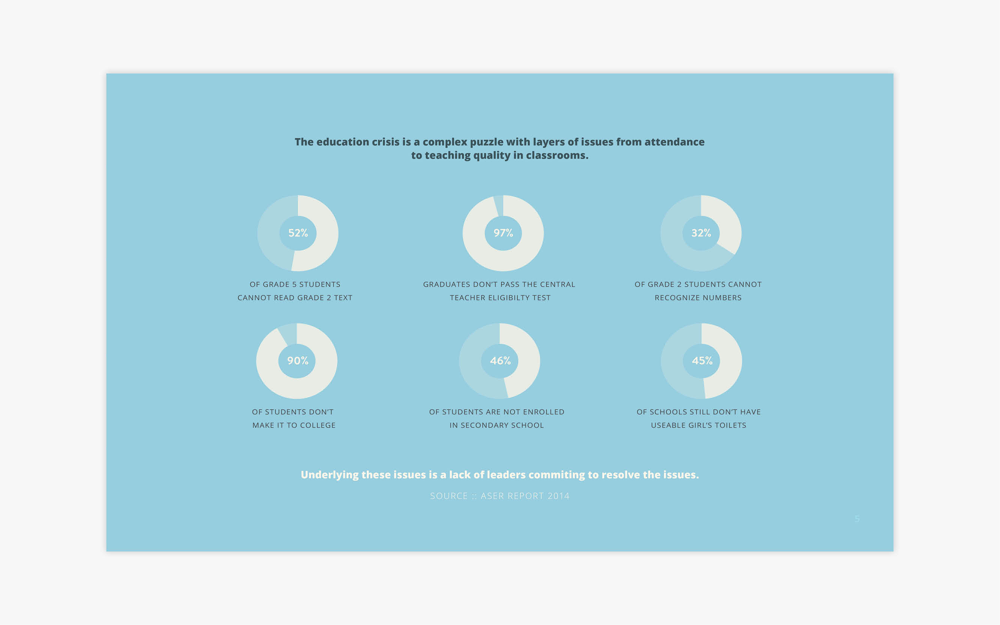
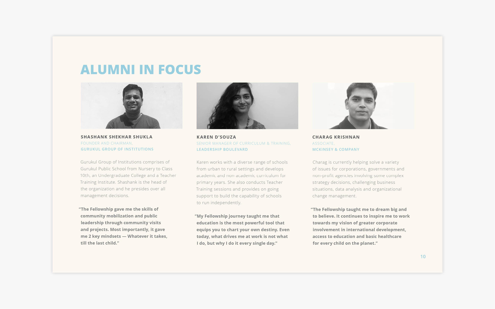
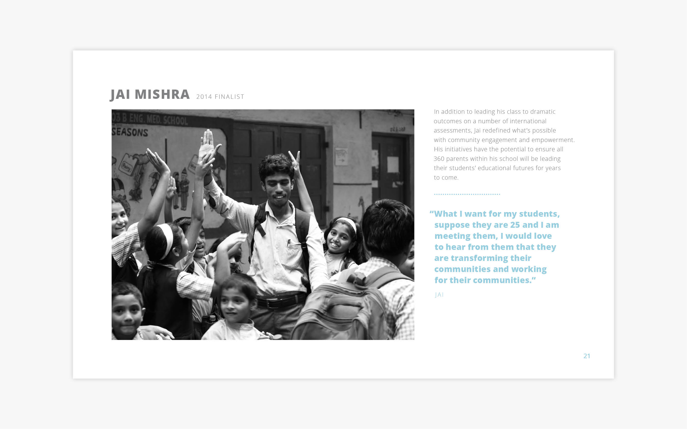
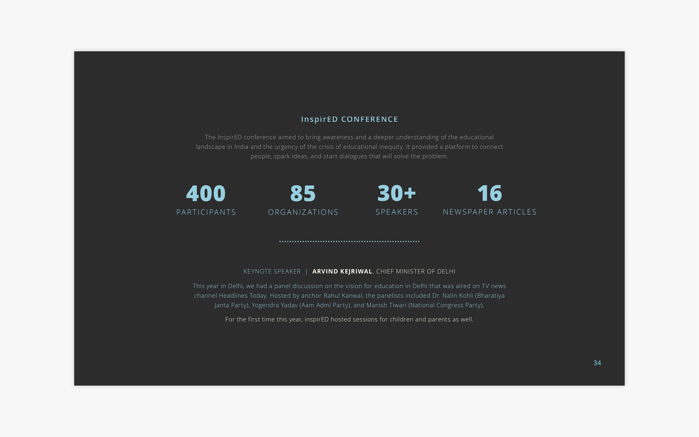
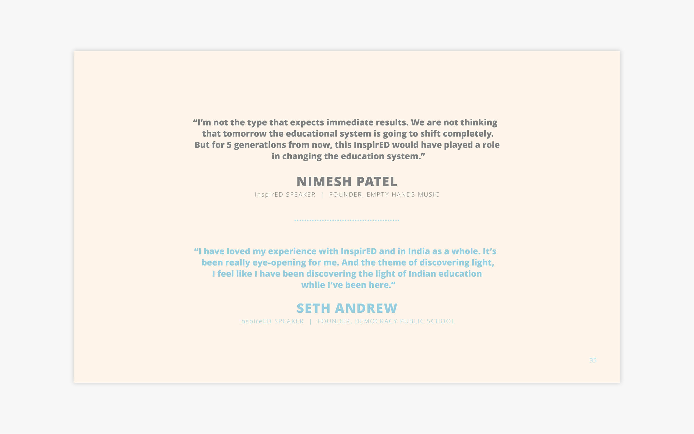
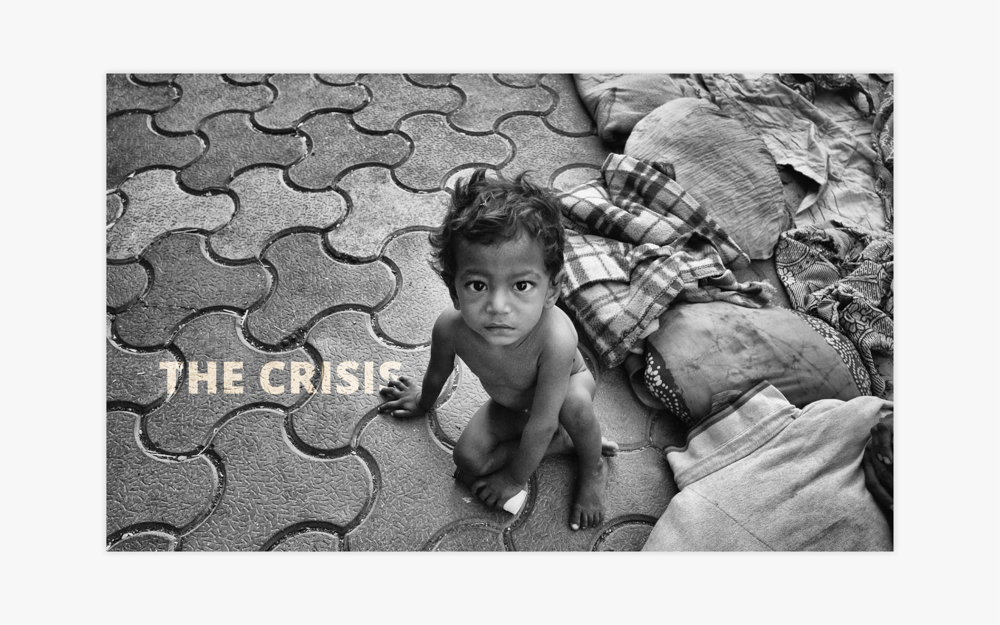
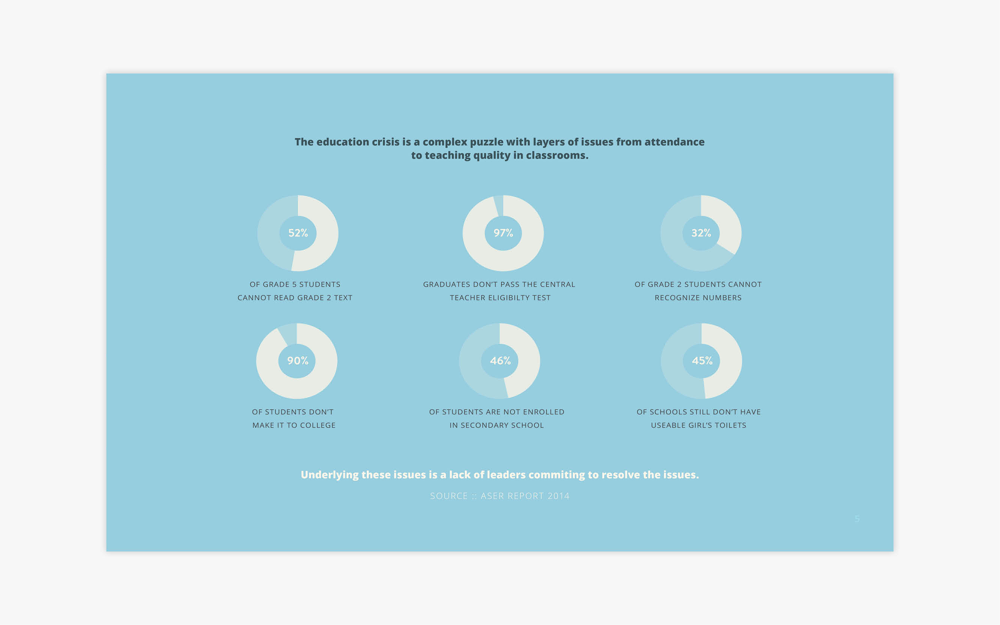
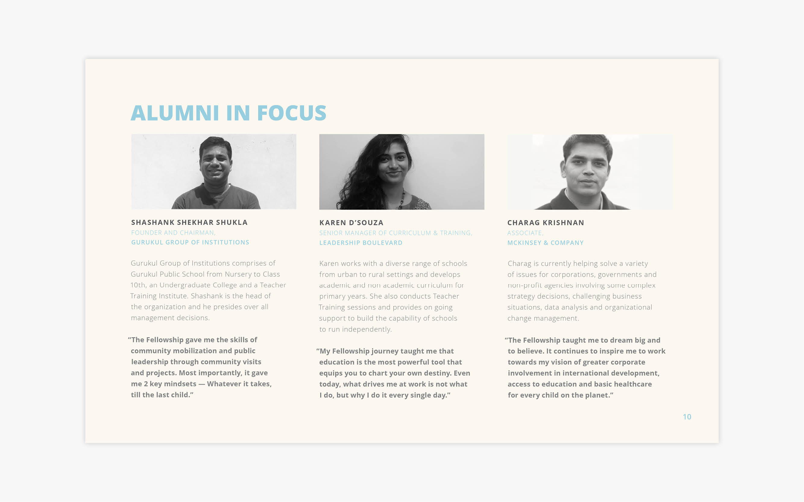
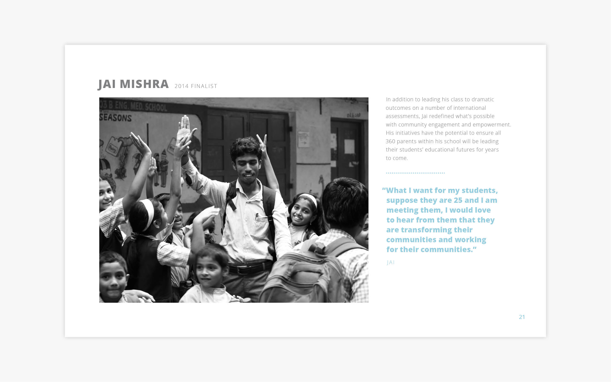
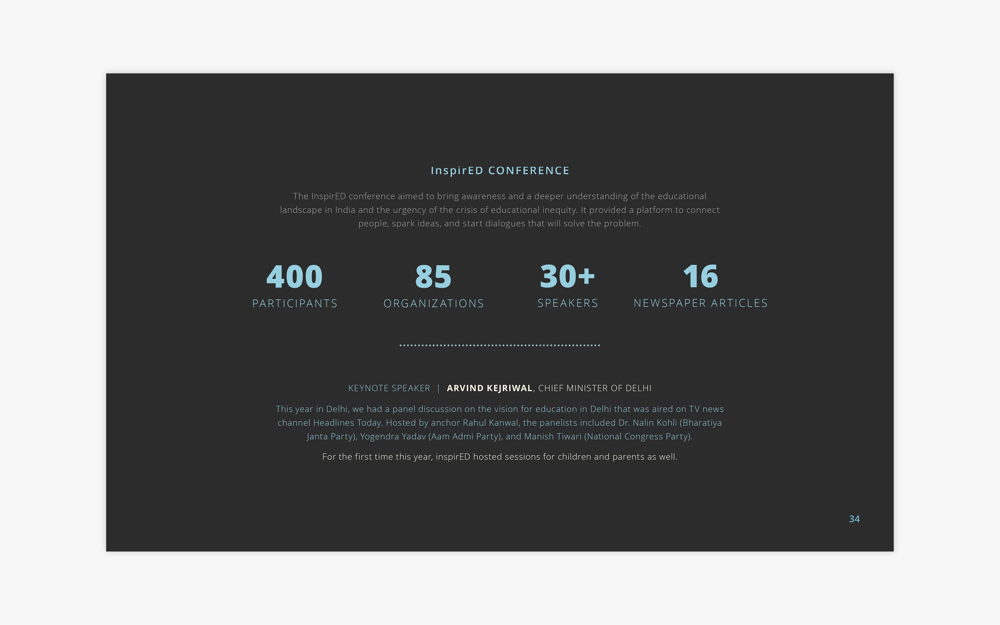
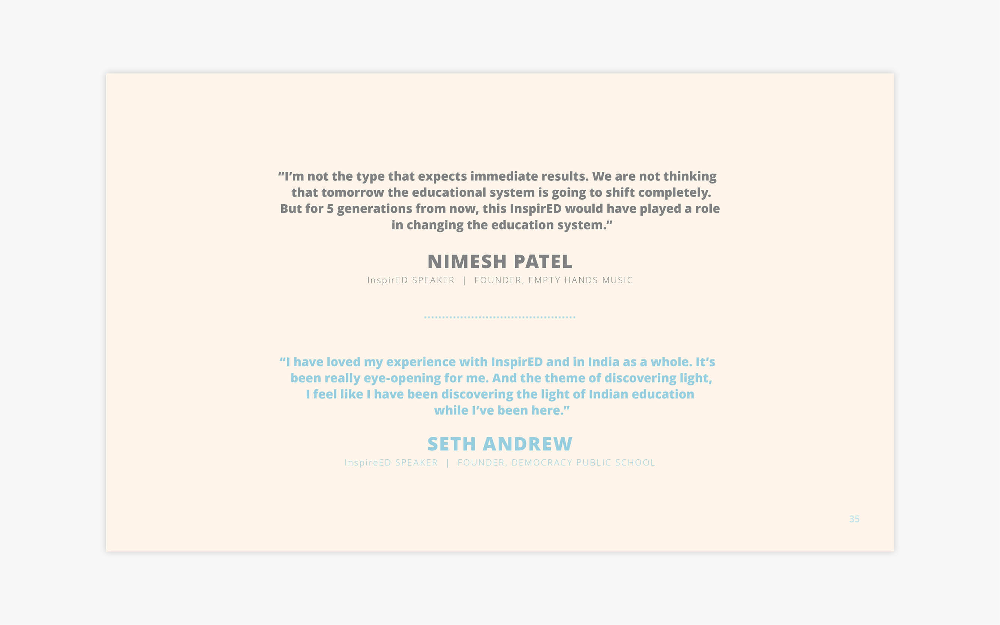
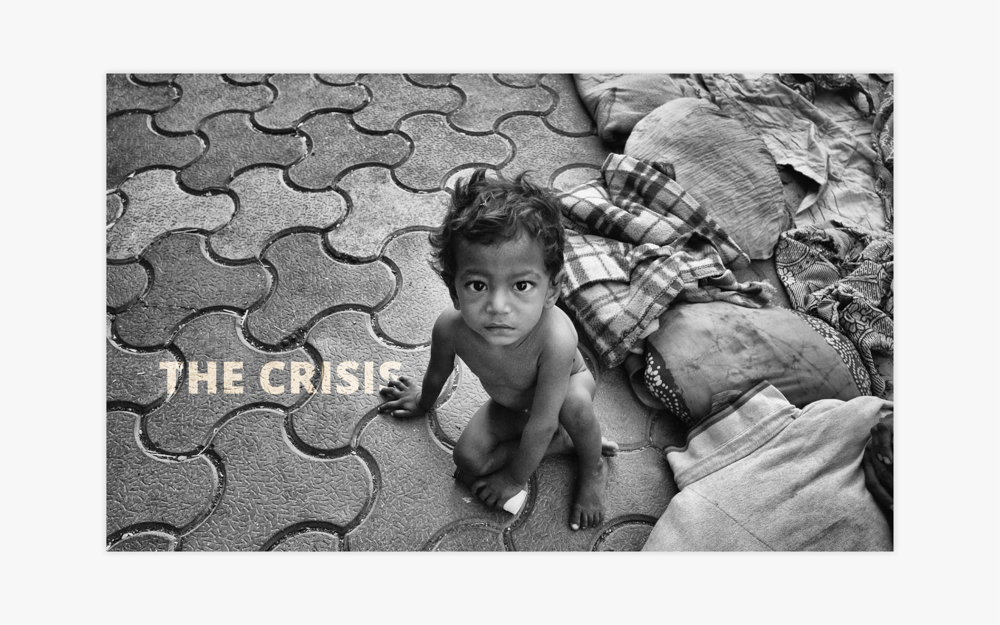

 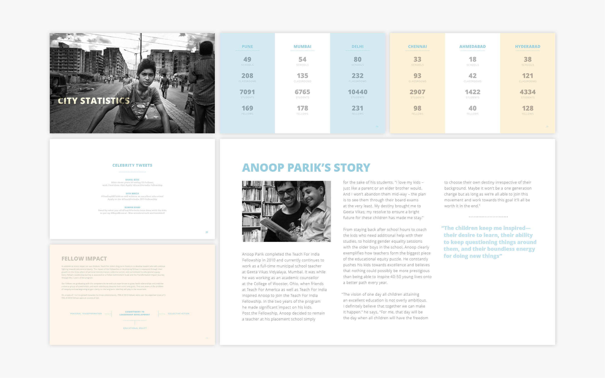
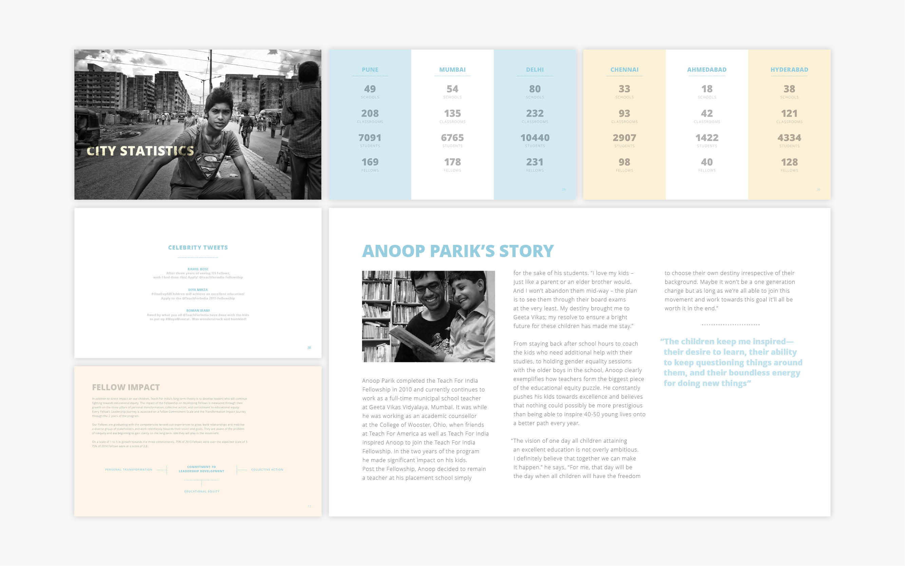